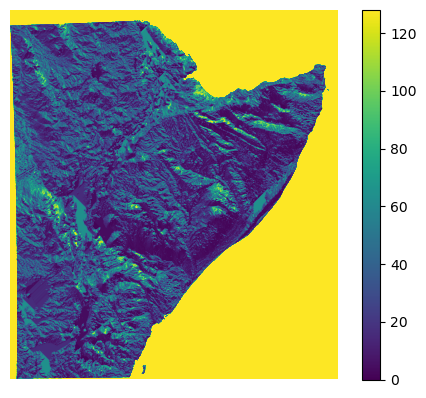
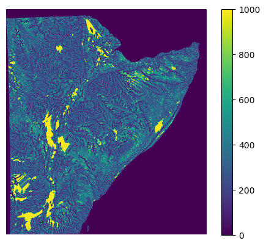
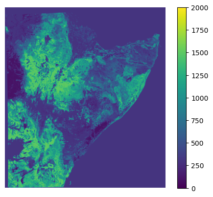
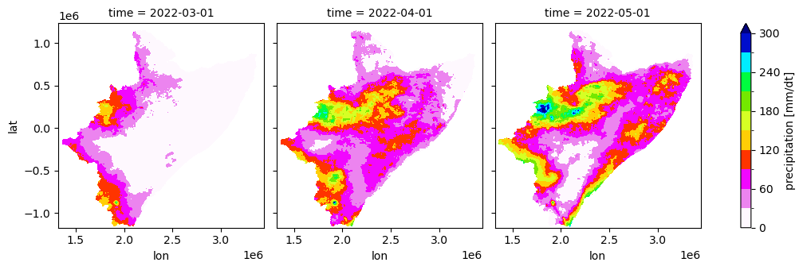

Contents
The following course cover the following content:
Convert climate seasonal forecasting into model forcing datasets
Translate climate forecasting into hydrological forecasting
4. Translate climate forecasting into hydrological forecasting
Creating an ensamble of model simulation files
Runing multiple simulaiton
Understanding seasonal hydrological forecasting
WARNING!. Before you start the analyis, please make sure that you directories have the following structure.
[1]:
print("Local_directory\n|__training\n |___forecast\n | |__regional\n | | |__datasets\n | | | |__csv\n | | | |__shp\n | | |__model\n | | | |__inputs\n | | |__outputs\n | | |__postpp\n | | |__csv\n | | |__netcdf\n | | |__raster\n | | |__fig\n | |__basin\n |___historical\n |__regional\n | |__datasets\n | |__model\n | |__outputs\n | |__postpp\n |__basin\n")
Local_directory
|__training
|___forecast
| |__regional
| | |__datasets
| | | |__csv
| | | |__shp
| | |__model
| | | |__inputs
| | |__outputs
| | |__postpp
| | |__csv
| | |__netcdf
| | |__raster
| | |__fig
| |__basin
|___historical
|__regional
| |__datasets
| |__model
| |__outputs
| |__postpp
|__basin
4.1. Create an ensamble of model simulation files
The first step for runing the hydrological model is the creation on all input and setting files for each of the realizations. All model files can be created using creating simple text editors (e.g. notepad in windows). Example of model files are found on the folder training/historical/regional/model/.
A detailed description of all model files can be found in DRYP documentation as well as in the DRYP folder of the present tranining material.
For running all simulations, we have preparing all the input files by copying and changing the required fields on the each file. The script below can be used to create all simulation model files.
[2]:
import os
import numpy as np
import pandas as pd
def write_dryp_sim_file_forecasting(fname_input, newfname_input=None, mname="sim",
dataset_pre="YYYYMM", dataset_pet="YYYYMM",
start_date="2024 03 01", end_date="2024 05 31",
create_setting_file=True):
""" This function create the simulation and setting file for runnig DRYP. New
files are created based on files provided as original files, this function
changes the model name, precipitation and potential evapotranspiration
paths.
WARNING: if no new filename is provided it will replace the original file
Parameters:
-----------
fname_input : string
model inputfile, including path
newfname : string
new model inputfile, including path
mname : string
model name for the new file
dataset_pre : string
precipitation dataset name, including path
dataset_pet : string
potential evapotranspiration dataset name, including path
start_date : string
date in the following format "YYYY-MM-DD" (e.g. 2002-01-01)
end_date : string
date in the following format "YYYY-MM-DD" (e.g. 2002-03-01)
create_setting_file : bool
If True it create the setting dryp file
"""
# Check if input file exist
if not os.path.exists(fname_input):
raise ValueError("File not availble")
# Read model input file
f = pd.read_csv(fname_input)
# Change model name by adding the simulation number
f.drylandmodel[1] = mname
# Meterological data ==============================================
f.drylandmodel[66] = dataset_pre # Precipitation file
f.drylandmodel[68] = dataset_pet # Evapotranspiration file
# create simulation paramter files
if create_setting_file is True:
# change parameters of the of the setting parameter file
fname_settings = f.drylandmodel[87]
# create a copy of the file with the new name
fname_root = fname_settings.split('.')[0]
fname_ext = fname_settings.split('.')[1]
# replace new setting file
f.drylandmodel[87] = newfname_settings
# Open setting parameter file
fsimpar = pd.read_csv(fname_settings)
# change simulation period
fsimpar.DWAPM_SET[2] = start_date
fsimpar.DWAPM_SET[4] = end_date
# new input file name
newfname_settings = fname_root+'_'+sim+'.'+fname_ext
copyfile(fname_settings, newfname_settings)
# Reeplace model input and parameters file
os.remove(newfname_settings) if os.path.exists(newfname_settings) else None
# Reeplace model input and parameters file
fsimpar.to_csv(newfname_settings, index=False)
# Reeplace model input and parameters file
os.remove(newfname_input) if os.path.exists(newfname_input) else None
# Write model parameter and input file
f.to_csv(newfname_input, index=False)
def gen_array_input_files(fname_input, fname_parameter_sets):
# read parameter sets
parameter = pd.read_csv(fname_parameter_sets)
#Create a copy of inputfile
fname_root = fname_input.split('.')[0]
fname_ext = fname_input.split('.')[1]
for npar in range(0, 100):
# new input file name
newfname_input = fname_root+'_'+str(npar)+'.'+fname_ext
# replace all new values in dataset
write_sim_file(fname_input, newfname_input, parameter.loc[npar])
[3]:
def create_ensamble(pools, nsamples=30):
"""
Parameters
-----------
forecast_pet: path-list for forecasted evapotranspiration
forecast_pet: path-list for forecasted precipitation
"""
#print(sorted(glob.glob(f'{forecast_pet}/*_MAM_*.nc')))
#pools = list(map(lambda x: sorted(glob.glob(f'{x}/*_MAM_*.nc')), [forecast_pet, forecast_pre]))
#print(pools)
plist = np.asarray([f'{x}+{y}+' for x in pools[0] for y in pools[1]])
# the sampling is done here
#what_ = np.random.default_rng().choice(plist, size=nsamples, replace=False).tolist()
what_ = np.random.default_rng(seed=42).choice(plist, size=nsamples, replace=False).tolist()
# returns a list of nsamples-pairs, e.g., [['pet_20', 'pre_1'], ['pet_0', 'pre_29'], [...], ...]
pairs = list(map(lambda x: x.split('+'), what_))
return pairs
[4]:
import matplotlib.pyplot as plt
import rasterio
# this function can be used for ploting raster maps, modify it as your conveniency.
def plot_raster_file(fname, ax=None, vmin=-20.0, vmax=20.0):
# create plot
if ax is None:
fig, ax = plt.subplots()
cmap = plt.cm.get_cmap('coolwarm_r', 12)
data = rasterio.open(fname).read(1)
im = ax.imshow(data,# origin="lower",#cmap=cmap,
vmin=vmin, vmax=vmax,
)#extent=bounds)
ax.axis('off')
plt.colorbar(im)
return im
[5]:
import json
import shutil
def write_JSON_dryp_file(source_file, destination_file=None,
mname="sim", dataset_pre="YYYYMM", dataset_pet="YYYYMM",
start_date="2024 03 01", end_date="2024 05 31",
create_setting_file=True):
""" This function create the simulation and setting file for runnig DRYP. New
files are created based on files provided as original files, this function
changes the model name, precipitation and potential evapotranspiration
paths.
WARNING: if no new filename is provided it will replace the original file
Parameters:
-----------
fname_input : string
model inputfile, including path
newfname : string
new model inputfile, including path
mname : string
model name for the new file
dataset_pre : string
precipitation dataset name, including path
dataset_pet : string
potential evapotranspiration dataset name, including path
start_date : string
date in the following format "YYYY-MM-DD" (e.g. 2002-01-01)
end_date : string
date in the following format "YYYY-MM-DD" (e.g. 2002-03-01)
create_setting_file : bool
If True it create the setting dryp file
"""
# Step 1: Define file paths
#source_file = "source.json"
#destination_file = "destination.json"
# Step 2: Copy the file
shutil.copy(source_file, destination_file)
# Step 3: Load the copied file
with open(destination_file, "r") as file:
data = json.load(file)
# Step 4: Replace specific values
# Example: Replace values based on specific keys
keys_to_replace = {
"model_name": mname,
"path_pre": dataset_pre,
"path_pet": dataset_pet,
}
for key, new_value in keys_to_replace.items():
if key in data:
data[key] = new_value
# Step 5: Save the modified data back to the file
with open(destination_file, "w") as file:
json.dump(data, file, indent=4)
print(f"Values updated in {destination_file}")
[6]:
def gen_array_input_JSON_files(fname_input, fname_parameter_sets):
# read parameter sets
parameter = pd.read_csv(fname_parameter_sets)
#Create a copy of inputfile
fname_root = fname_input.split('.')[0]
fname_ext = fname_input.split('.')[1]
for npar in range(0, 100):
# new input file name
newfname_input = fname_root+'_'+str(npar)+'.'+fname_ext
# replace all new values in dataset
write_JSON_dryp_file(fname_input, newfname_input, parameter.loc[npar])
[7]:
def update_json(data, updates):
"""
Recursively update values in nested JSON data.
:param data: The JSON object (dict or list).
:param updates: A dictionary where keys are dot-separated paths to values and values are the new values.
:return: Updated JSON object.
"""
if isinstance(data, dict):
for key, value in data.items():
full_path = f"{key}"
if full_path in updates:
data[key] = updates[full_path]
elif isinstance(value, (dict, list)):
data[key] = update_json(value, updates)
elif isinstance(data, list):
for i, item in enumerate(data):
data[i] = update_json(item, updates)
return data
[8]:
def apply_updates(data, updates):
"""
Convert dot-separated paths into nested updates for a recursive update.
"""
for path, new_value in updates.items():
keys = path.split(".")
sub_data = data
for key in keys[:-1]:
sub_data = sub_data.setdefault(key, {})
sub_data[keys[-1]] = new_value
return data
[9]:
# Step 4: Recursive function to update nested JSON
def update_json(data, updates):
"""
Recursively update values in nested JSON data.
:param data: The JSON object (dict or list).
:param updates: A dictionary where keys are dot-separated paths to values and values are the new values.
:return: Updated JSON object.
"""
if isinstance(data, dict):
for key, value in data.items():
full_path = f"{key}"
if full_path in updates:
data[key] = updates[full_path]
elif isinstance(value, (dict, list)):
data[key] = update_json(value, updates)
elif isinstance(data, list):
for i, item in enumerate(data):
data[i] = update_json(item, updates)
return data
# Step 5: Define keys to update
# Step 6: Apply the updates to the JSON data
def apply_updates(data, updates):
"""
Convert dot-separated paths into nested updates for a recursive update.
"""
for path, new_value in updates.items():
keys = path.split(".")
sub_data = data
for key in keys[:-1]:
sub_data = sub_data.setdefault(key, {})
sub_data[keys[-1]] = new_value
return data
def write_JSON_dryp_file(source_file, destination_file=None,
mname="sim", dataset_pre="YYYYMM", dataset_pet="YYYYMM",
start_date="2024 03 01", end_date="2024 05 31",
new_setting_file=None):
# Step 1: Define file paths
#source_file = "source.json"
#destination_file = "destination.json"
# Step 2: Copy the file
shutil.copy(source_file, destination_file)
# Step 3: Load the copied file
with open(destination_file, "r") as file:
data = json.load(file)
# set changes on input file
updates = {
"model_name": mname,
"METEO.path_pre": dataset_pre,
"METEO.path_pet": dataset_pet,
}
# update imput file
updated_data = apply_updates(data, updates)
# create new settings file
if new_setting_file is not None:
# get setting file name
setting_file = updated_data["OUTPUT"]["path_setting"]
# set changes on input file
updates = {
"OUTPUT.path_setting": new_setting_file,
}
# update imput file
updated_data = apply_updates(updated_data, updates)
# Step 7: Save the updated JSON data back to the file
with open(destination_file, "w") as file:
json.dump(updated_data, file, indent=4)
print(f"Values updated in {destination_file}")
# create new settings file
if new_setting_file is not None:
# Step 1a: copy setting file
shutil.copy(setting_file, new_setting_file)
# Step 2a: Load the copied file
with open(setting_file, "r") as file:
data_settings = json.load(file)
# Step 3a:set changes in settings file
update_settings = {
"SIMULATION_PERIOD.start_date": start_date,
"SIMULATION_PERIOD.end_date": end_date,
}
# Step 4a: create filename
updated_settings = apply_updates(
data_settings,
update_settings
)
# Step 5a: Save the updated JSON data back to the file
with open(new_setting_file, "w") as file:
json.dump(updated_settings, file, indent=4)
print(f"Values updated in {new_setting_file}")
[10]:
def season_name_to_number(season):
"""This function read a string representing seasons and return a
list of numbers indicating months
Parameters
----------
season : str
season represented by three capital letters (e.g. "OND")
Returns
-------
list
list of months
"""
if season == "MAM":
season = [3,4,5]
elif season == "OND":
season = [10,11,12]
return season
[32]:
fname_parameter = "/home/cuwalid/training/historical/regional/model/input/HAD_flowdir_D8.asc"
plot_raster_file(fname_parameter, vmin=0.0, vmax=128.0)
/tmp/ipykernel_161122/94300322.py:8: MatplotlibDeprecationWarning: The get_cmap function was deprecated in Matplotlib 3.7 and will be removed two minor releases later. Use ``matplotlib.colormaps[name]`` or ``matplotlib.colormaps.get_cmap(obj)`` instead.
cmap = plt.cm.get_cmap('coolwarm_r', 12)
[32]:
<matplotlib.image.AxesImage at 0x7f7ffb0d37d0>

[29]:
fname_parameter = "/home/cuwalid/training/historical/regional/model/input/HAD_riv_length_utm.asc"
plot_raster_file(fname_parameter, vmin=0.0, vmax=1000.0)
/tmp/ipykernel_1899156/94300322.py:8: MatplotlibDeprecationWarning: The get_cmap function was deprecated in Matplotlib 3.7 and will be removed two minor releases later. Use ``matplotlib.colormaps[name]`` or ``matplotlib.colormaps.get_cmap(obj)`` instead.
cmap = plt.cm.get_cmap('coolwarm_r', 12)
[29]:
<matplotlib.image.AxesImage at 0x7f7472187b90>

[21]:
fname_parameter = "/home/cuwalid/training/historical/regional/model/input/HAD_rootdepth_utm_m.asc"
[23]:
plot_raster_file(fname_parameter, vmin=0.0, vmax=2000)
/tmp/ipykernel_1899156/94300322.py:8: MatplotlibDeprecationWarning: The get_cmap function was deprecated in Matplotlib 3.7 and will be removed two minor releases later. Use ``matplotlib.colormaps[name]`` or ``matplotlib.colormaps.get_cmap(obj)`` instead.
cmap = plt.cm.get_cmap('coolwarm_r', 12)
[23]:
<matplotlib.image.AxesImage at 0x7f74724bfb90>

Function described above required some information the is listed below, how to obtain is also explain below:
list of precipitation dataset that will be used as forcing dataset for both precipitaiton (pre) and potential evapotranspiration (pet). They should include the path.
name of model simulation files
Name of the model for each simulation
Number of simulations
[11]:
# list of number of files to process
#list_pre = range(0, 30), list_pet = range(0, 30)
#number of simulations
nsim = 30
season = "OND"
iyear = 2022
[12]:
start_date = str(iyear) + " " + str(season_name_to_number(season)[0]) + " 1"
end_date = str(iyear) + " " + str(season_name_to_number(season)[2]) + " 31"
[13]:
start_date, end_date
[13]:
('2022 10 1', '2022 12 31')
list of precipitation dataset
[14]:
# folder preipitation datasets
folder_datasets_pre = "/home/cuwalid/training/forecast/regional/dataset/pre/"+season+"_"+str(iyear)+"/"#Forecast_PET_HAD_ens_0_MAM_2024.nc"
#folder_datasets_pre = "D:/HAD/training/forecast/regional/datasets/pre/"
#fname_pre = [folder_datasets_pre+"Forecast_PRE_HAD_ens_"+str(isim)+"_MAM_2022.nc" for isim in range(nsim)]
#fname_pre = [folder_datasets_pre+"2024_MAM_"+str(isim)+".nc" for isim in range(nsim)]
fname_pre = [folder_datasets_pre+"Forecast_PRE_HAD_ens_"+str(isim)+"_"+season+"_"+str(iyear)+".nc" for isim in range(nsim)]
[15]:
#fname_pre
List of potential evapotranspiration datasets
[16]:
# folder potential evapotranspiration datasets
#folder_datasets_pet = "/home/cuwalid/training/forecast/regional/dataset/pet/trial_5/"#Forecast_PET_HAD_ens_29_MAM_2022.nc"
folder_datasets_pet = "/home/cuwalid/training/forecast/regional/dataset/pet/"+season+"_"+str(iyear)+"_PET_forecast/"#Forecast_PET_HAD_ens_0_MAM_2024.nc"
#folder_datasets_pet = "D:/HAD/training/forecast/regional/datasets/pet/"
fname_pet = [folder_datasets_pet+"Forecast_PET_HAD_ens_"+str(isim)+"_"+season+"_"+str(iyear)+".nc" for isim in range(nsim)]
[17]:
#fname_pet
Depending on the number of datasets, the list of simulaitons required to cover all the posible combination of forcing datasets could be large, therfore, only a sample of all posibles scenarions are chosen for the hydrological forecast.
selection of climate forecast
[18]:
forcing_list = np.array(create_ensamble([fname_pet, fname_pre], nsamples=30))
[19]:
#forcing_list
Model list simulations:
Specifiy the list of model names and the name of model simulatio files
[20]:
# Model file names
#local_directory = "/home/<username>/training/forecast/regional/model/" #D:/HAD/training/regional/model/"
#local_directory = "/home/aquichimbo/training/forecast/regional/model/" #D:/HAD/training/regional/model/"
local_directory = "/home/cuwalid/training/forecast/regional/model/" #D:/HAD/training/regional/model/"
#local_directory = "/home/cuwalid/training/forecast/regional/" #D:/HAD/training/regional/model/"
#local_directory = "D:/HAD/model/icpac/" #D:/HAD/training/regional/model/"
fsim_input_file = local_directory + "HAD_IMERGcv_input_sim85.json"#"HAD_IMERG_input_sim_cuwalid.dmp"
fsim_setting_file = local_directory + "HAD_IMERGcv_par_setting_0.json"#"HAD_IMERG_par_setting.dwapm"
# model name list of new simulation files
mname = [season+"_"+str(iyear)+"_realization_"+str(isim) for isim in range(30)]
#fsim_forecasting = ["D:/HAD/training/forecast/regional/HAD_IMERG_input_sim_"+str(isim)+".dmp" for isim in range(30)]
#fsim_forecasting = ["D:\HAD\model\icpac\HAD_IMERGba_input_MAM_forecast_tests_"+str(isim)+"_2022.dmp" for isim in range(30)]
#fsim_forecasting = ["/home/cuwalid/training/forecast/regional/model/HAD_IMERGba_input_MAM_forecast_tests_"+str(isim)+"_2022.dmp" for isim in range(30)]
#fsim_forecasting = ["/home/<username>/training/forecast/regional/model/HAD_IMERGba_input_MAM_forecast_test_"+str(isim)+"_2022.dmp" for isim in range(30)]
#fsim_forecasting = ["/home/aquichimbo/training/forecast/regional/model/HAD_IMERGba_input_MAM_forecast_test_"+str(isim)+"_2022.dmp" for isim in range(30)]
fsim_forecasting = ["/home/cuwalid/training/forecast/regional/model/HAD_IMERG_input_"+season+"_"+str(iyear)+"_forecast_"+str(isim)+".json" for isim in range(30)]
[21]:
fname_setting_file = "/home/cuwalid/training/forecast/regional/model/HAD_IMERG_par_setting_"+season+"_"+str(iyear)+".json"
fname_setting_file
[21]:
'/home/cuwalid/training/forecast/regional/model/HAD_IMERG_par_setting_OND_2022.json'
[22]:
#fsim_forecasting
Generate simulation files
[27]:
for ifsim_forecasting, imname, ifname_pre, ifname_pet in zip(fsim_forecasting, mname, forcing_list[:,1], forcing_list[:,0]):
write_JSON_dryp_file(fsim_input_file,
destination_file=ifsim_forecasting,
mname=imname,
dataset_pre=ifname_pre, dataset_pet=ifname_pet,
start_date=start_date, end_date=end_date,
new_setting_file=fname_setting_file
)
Values updated in /home/cuwalid/training/forecast/regional/model/HAD_IMERG_input_OND_2022_forecast_0.json
Values updated in /home/cuwalid/training/forecast/regional/model/HAD_IMERG_par_setting_OND_2022.json
Values updated in /home/cuwalid/training/forecast/regional/model/HAD_IMERG_input_OND_2022_forecast_1.json
Values updated in /home/cuwalid/training/forecast/regional/model/HAD_IMERG_par_setting_OND_2022.json
Values updated in /home/cuwalid/training/forecast/regional/model/HAD_IMERG_input_OND_2022_forecast_2.json
Values updated in /home/cuwalid/training/forecast/regional/model/HAD_IMERG_par_setting_OND_2022.json
Values updated in /home/cuwalid/training/forecast/regional/model/HAD_IMERG_input_OND_2022_forecast_3.json
Values updated in /home/cuwalid/training/forecast/regional/model/HAD_IMERG_par_setting_OND_2022.json
Values updated in /home/cuwalid/training/forecast/regional/model/HAD_IMERG_input_OND_2022_forecast_4.json
Values updated in /home/cuwalid/training/forecast/regional/model/HAD_IMERG_par_setting_OND_2022.json
Values updated in /home/cuwalid/training/forecast/regional/model/HAD_IMERG_input_OND_2022_forecast_5.json
Values updated in /home/cuwalid/training/forecast/regional/model/HAD_IMERG_par_setting_OND_2022.json
Values updated in /home/cuwalid/training/forecast/regional/model/HAD_IMERG_input_OND_2022_forecast_6.json
Values updated in /home/cuwalid/training/forecast/regional/model/HAD_IMERG_par_setting_OND_2022.json
Values updated in /home/cuwalid/training/forecast/regional/model/HAD_IMERG_input_OND_2022_forecast_7.json
Values updated in /home/cuwalid/training/forecast/regional/model/HAD_IMERG_par_setting_OND_2022.json
Values updated in /home/cuwalid/training/forecast/regional/model/HAD_IMERG_input_OND_2022_forecast_8.json
Values updated in /home/cuwalid/training/forecast/regional/model/HAD_IMERG_par_setting_OND_2022.json
Values updated in /home/cuwalid/training/forecast/regional/model/HAD_IMERG_input_OND_2022_forecast_9.json
Values updated in /home/cuwalid/training/forecast/regional/model/HAD_IMERG_par_setting_OND_2022.json
Values updated in /home/cuwalid/training/forecast/regional/model/HAD_IMERG_input_OND_2022_forecast_10.json
Values updated in /home/cuwalid/training/forecast/regional/model/HAD_IMERG_par_setting_OND_2022.json
Values updated in /home/cuwalid/training/forecast/regional/model/HAD_IMERG_input_OND_2022_forecast_11.json
Values updated in /home/cuwalid/training/forecast/regional/model/HAD_IMERG_par_setting_OND_2022.json
Values updated in /home/cuwalid/training/forecast/regional/model/HAD_IMERG_input_OND_2022_forecast_12.json
Values updated in /home/cuwalid/training/forecast/regional/model/HAD_IMERG_par_setting_OND_2022.json
Values updated in /home/cuwalid/training/forecast/regional/model/HAD_IMERG_input_OND_2022_forecast_13.json
Values updated in /home/cuwalid/training/forecast/regional/model/HAD_IMERG_par_setting_OND_2022.json
Values updated in /home/cuwalid/training/forecast/regional/model/HAD_IMERG_input_OND_2022_forecast_14.json
Values updated in /home/cuwalid/training/forecast/regional/model/HAD_IMERG_par_setting_OND_2022.json
Values updated in /home/cuwalid/training/forecast/regional/model/HAD_IMERG_input_OND_2022_forecast_15.json
Values updated in /home/cuwalid/training/forecast/regional/model/HAD_IMERG_par_setting_OND_2022.json
Values updated in /home/cuwalid/training/forecast/regional/model/HAD_IMERG_input_OND_2022_forecast_16.json
Values updated in /home/cuwalid/training/forecast/regional/model/HAD_IMERG_par_setting_OND_2022.json
Values updated in /home/cuwalid/training/forecast/regional/model/HAD_IMERG_input_OND_2022_forecast_17.json
Values updated in /home/cuwalid/training/forecast/regional/model/HAD_IMERG_par_setting_OND_2022.json
Values updated in /home/cuwalid/training/forecast/regional/model/HAD_IMERG_input_OND_2022_forecast_18.json
Values updated in /home/cuwalid/training/forecast/regional/model/HAD_IMERG_par_setting_OND_2022.json
Values updated in /home/cuwalid/training/forecast/regional/model/HAD_IMERG_input_OND_2022_forecast_19.json
Values updated in /home/cuwalid/training/forecast/regional/model/HAD_IMERG_par_setting_OND_2022.json
Values updated in /home/cuwalid/training/forecast/regional/model/HAD_IMERG_input_OND_2022_forecast_20.json
Values updated in /home/cuwalid/training/forecast/regional/model/HAD_IMERG_par_setting_OND_2022.json
Values updated in /home/cuwalid/training/forecast/regional/model/HAD_IMERG_input_OND_2022_forecast_21.json
Values updated in /home/cuwalid/training/forecast/regional/model/HAD_IMERG_par_setting_OND_2022.json
Values updated in /home/cuwalid/training/forecast/regional/model/HAD_IMERG_input_OND_2022_forecast_22.json
Values updated in /home/cuwalid/training/forecast/regional/model/HAD_IMERG_par_setting_OND_2022.json
Values updated in /home/cuwalid/training/forecast/regional/model/HAD_IMERG_input_OND_2022_forecast_23.json
Values updated in /home/cuwalid/training/forecast/regional/model/HAD_IMERG_par_setting_OND_2022.json
Values updated in /home/cuwalid/training/forecast/regional/model/HAD_IMERG_input_OND_2022_forecast_24.json
Values updated in /home/cuwalid/training/forecast/regional/model/HAD_IMERG_par_setting_OND_2022.json
Values updated in /home/cuwalid/training/forecast/regional/model/HAD_IMERG_input_OND_2022_forecast_25.json
Values updated in /home/cuwalid/training/forecast/regional/model/HAD_IMERG_par_setting_OND_2022.json
Values updated in /home/cuwalid/training/forecast/regional/model/HAD_IMERG_input_OND_2022_forecast_26.json
Values updated in /home/cuwalid/training/forecast/regional/model/HAD_IMERG_par_setting_OND_2022.json
Values updated in /home/cuwalid/training/forecast/regional/model/HAD_IMERG_input_OND_2022_forecast_27.json
Values updated in /home/cuwalid/training/forecast/regional/model/HAD_IMERG_par_setting_OND_2022.json
Values updated in /home/cuwalid/training/forecast/regional/model/HAD_IMERG_input_OND_2022_forecast_28.json
Values updated in /home/cuwalid/training/forecast/regional/model/HAD_IMERG_par_setting_OND_2022.json
Values updated in /home/cuwalid/training/forecast/regional/model/HAD_IMERG_input_OND_2022_forecast_29.json
Values updated in /home/cuwalid/training/forecast/regional/model/HAD_IMERG_par_setting_OND_2022.json
4.2. Prepare multiple simulation on HPC
Run simulation on the backgound in linux. Uncoment lines to show results.
[28]:
fsim_forecasting_list = ["HAD_IMERG_input_"+season+"_"+str(iyear)+"_forecast_"+str(isim)+".json" for isim in range(30)]
[29]:
#fsim_forecasting_list = ["HAD_IMERGba_input_MAM_forecast_test_"+str(isim)+"_2022.dmp" for isim in [0,3]]
[30]:
for ifsim_forecasting in fsim_forecasting_list:
print("nohup python run_model_input.py /home/cuwalid/training/forecast/regional/model/"+ifsim_forecasting+" &")
#print("nohup python run_model_input.py /home/aquichimbo/training/forecast/regional/model/"+ifsim_forecasting+" &")
nohup python run_model_input.py /home/cuwalid/training/forecast/regional/model/HAD_IMERG_input_OND_2022_forecast_0.json &
nohup python run_model_input.py /home/cuwalid/training/forecast/regional/model/HAD_IMERG_input_OND_2022_forecast_1.json &
nohup python run_model_input.py /home/cuwalid/training/forecast/regional/model/HAD_IMERG_input_OND_2022_forecast_2.json &
nohup python run_model_input.py /home/cuwalid/training/forecast/regional/model/HAD_IMERG_input_OND_2022_forecast_3.json &
nohup python run_model_input.py /home/cuwalid/training/forecast/regional/model/HAD_IMERG_input_OND_2022_forecast_4.json &
nohup python run_model_input.py /home/cuwalid/training/forecast/regional/model/HAD_IMERG_input_OND_2022_forecast_5.json &
nohup python run_model_input.py /home/cuwalid/training/forecast/regional/model/HAD_IMERG_input_OND_2022_forecast_6.json &
nohup python run_model_input.py /home/cuwalid/training/forecast/regional/model/HAD_IMERG_input_OND_2022_forecast_7.json &
nohup python run_model_input.py /home/cuwalid/training/forecast/regional/model/HAD_IMERG_input_OND_2022_forecast_8.json &
nohup python run_model_input.py /home/cuwalid/training/forecast/regional/model/HAD_IMERG_input_OND_2022_forecast_9.json &
nohup python run_model_input.py /home/cuwalid/training/forecast/regional/model/HAD_IMERG_input_OND_2022_forecast_10.json &
nohup python run_model_input.py /home/cuwalid/training/forecast/regional/model/HAD_IMERG_input_OND_2022_forecast_11.json &
nohup python run_model_input.py /home/cuwalid/training/forecast/regional/model/HAD_IMERG_input_OND_2022_forecast_12.json &
nohup python run_model_input.py /home/cuwalid/training/forecast/regional/model/HAD_IMERG_input_OND_2022_forecast_13.json &
nohup python run_model_input.py /home/cuwalid/training/forecast/regional/model/HAD_IMERG_input_OND_2022_forecast_14.json &
nohup python run_model_input.py /home/cuwalid/training/forecast/regional/model/HAD_IMERG_input_OND_2022_forecast_15.json &
nohup python run_model_input.py /home/cuwalid/training/forecast/regional/model/HAD_IMERG_input_OND_2022_forecast_16.json &
nohup python run_model_input.py /home/cuwalid/training/forecast/regional/model/HAD_IMERG_input_OND_2022_forecast_17.json &
nohup python run_model_input.py /home/cuwalid/training/forecast/regional/model/HAD_IMERG_input_OND_2022_forecast_18.json &
nohup python run_model_input.py /home/cuwalid/training/forecast/regional/model/HAD_IMERG_input_OND_2022_forecast_19.json &
nohup python run_model_input.py /home/cuwalid/training/forecast/regional/model/HAD_IMERG_input_OND_2022_forecast_20.json &
nohup python run_model_input.py /home/cuwalid/training/forecast/regional/model/HAD_IMERG_input_OND_2022_forecast_21.json &
nohup python run_model_input.py /home/cuwalid/training/forecast/regional/model/HAD_IMERG_input_OND_2022_forecast_22.json &
nohup python run_model_input.py /home/cuwalid/training/forecast/regional/model/HAD_IMERG_input_OND_2022_forecast_23.json &
nohup python run_model_input.py /home/cuwalid/training/forecast/regional/model/HAD_IMERG_input_OND_2022_forecast_24.json &
nohup python run_model_input.py /home/cuwalid/training/forecast/regional/model/HAD_IMERG_input_OND_2022_forecast_25.json &
nohup python run_model_input.py /home/cuwalid/training/forecast/regional/model/HAD_IMERG_input_OND_2022_forecast_26.json &
nohup python run_model_input.py /home/cuwalid/training/forecast/regional/model/HAD_IMERG_input_OND_2022_forecast_27.json &
nohup python run_model_input.py /home/cuwalid/training/forecast/regional/model/HAD_IMERG_input_OND_2022_forecast_28.json &
nohup python run_model_input.py /home/cuwalid/training/forecast/regional/model/HAD_IMERG_input_OND_2022_forecast_29.json &
Create slurm files for each simulations
[ ]:
Run all simulation by subnniting all jobs
[ ]:
4.3. Understanding hydrological outputs
[1]:
# Import libraries from local repository
import sys
#sys.path.append('C:/Users/Edisson/Documents/GitHub/DRYPv2.0.1')
sys.path.append('/home/cuwalid/CUWALID/DRYP/')
import tools.DRYP_pptools as pptools
# Import general libraries
import matplotlib.pyplot as plt
import xarray as xr
Explore the diferent format of model outputs, donwload one realization from the server all variables included on the outputs.
Note the DRYP output include the following formats
Comma delimited files (.csv) to store time series,
netCDF files (.nc) to store gridded output datasets, and
ascii raster files (.asc) to store hydrological states for initial condions
NOTE: Before you start, please change the path to access the following directories:
Please, download one simulation from the ICPAC server for the following examples
[2]:
#training_general_path = "D:/HAD/training/"
#regional_path = "D:/HAD/training/regional/"
#basin_path = "D:/HAD/training/basin/"
[20]:
#fname_nc = "/home/cuwalid/training/forecast/regional/outputs/MAM_2022_realization_0_grid.nc"
fname_nc = "/shared/training/forecast/regional/outputs/MAM_2022_realization_test_20_grid.nc"
#fname_nc = "D:/HAD/output/MAM_2022_realization_1_grid.nc"
#fname_nc = basin_path + "output/Tana_IMcal_sim33_grid.nc"
#fname_output = basin_path + "postpp/Tana_IMcal_sim33_grid_season.nc"
[21]:
#pptools.calculate_seasonal_average_from_netCDF(fname_nc, season="OND", fname_out=fname_output)
[22]:
data = xr.open_dataset(fname_nc)['pre']
[23]:
#data.plot(x="lon", y="lat", col="time")
data.plot(x="lon", y="lat", col="time", robust=False, cmap='gist_ncar_r', levels=11, figsize=(11,3.5), vmin=0, vmax=300)
[23]:
<xarray.plot.facetgrid.FacetGrid at 0x7fa1d2d9fa10>

TASK: Plot other variables available on the model outputs:
Grided datasets store the following variables (names of variables are written in parenthesis):
*grid.nc files store the following variables
Precipitaion (pre)
Potential evapotranspiration (pet)
Actual evapotranspiration (aet)
soil water content (tht)
Total groundwater recharge (rch)
Water table elevation (wte)
Groundwater discharge (gdh)
Groundwater Evapotranspiration (egw)
Streamflow (dis)
Infiltration (inf)
Runoff (run)
Total water storage (twsc)
whereas gridrp.nc files store the following variables Transmission losses (tls) * Focused groundwater recharge (fch) * soil water content riparian zone (tht) * Riparian evapotranspiration (aet)
[ ]:
[ ]: